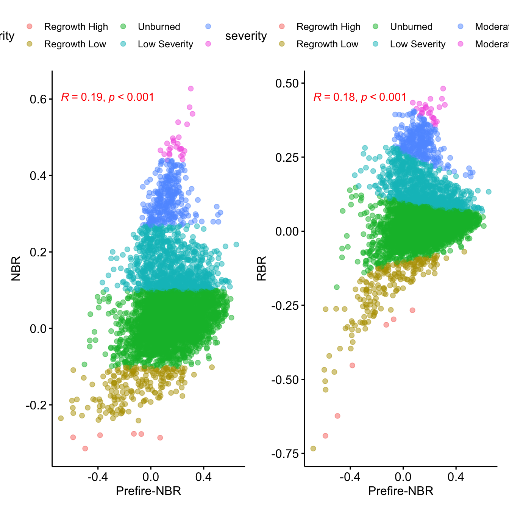
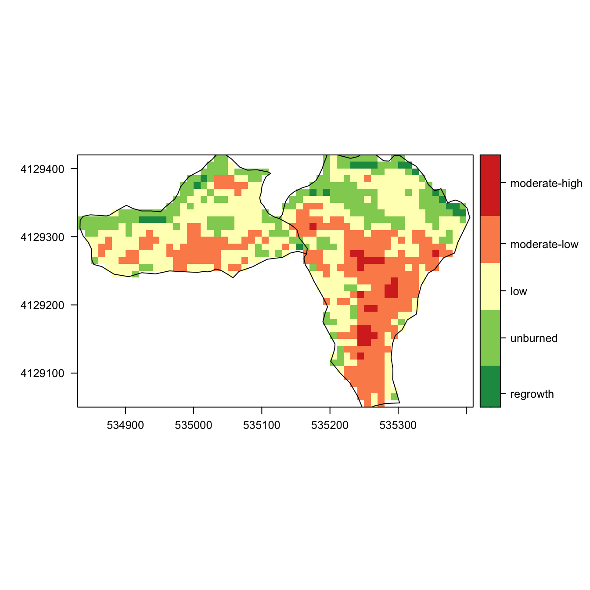
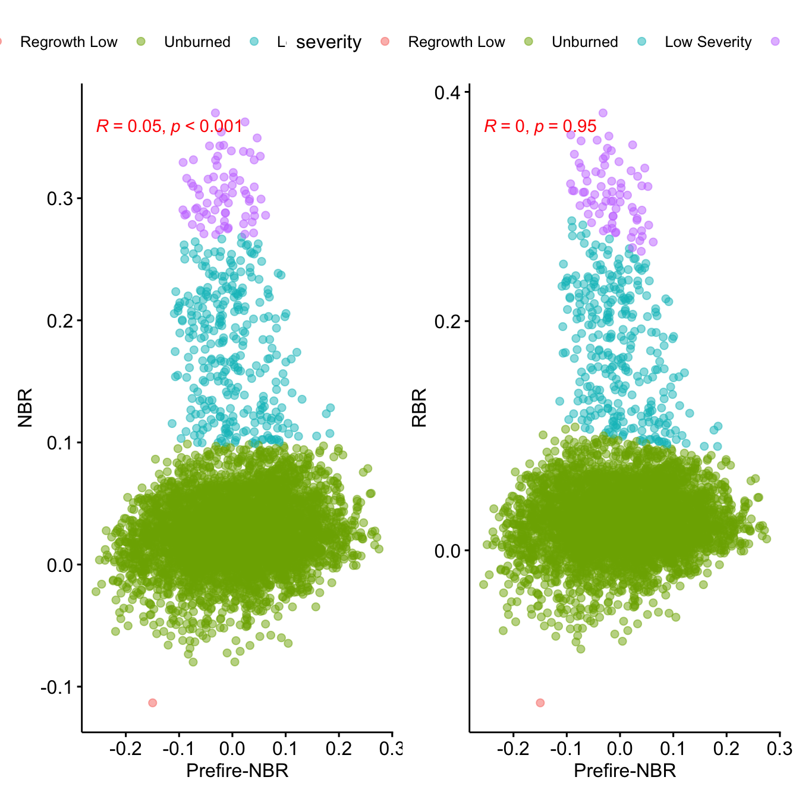
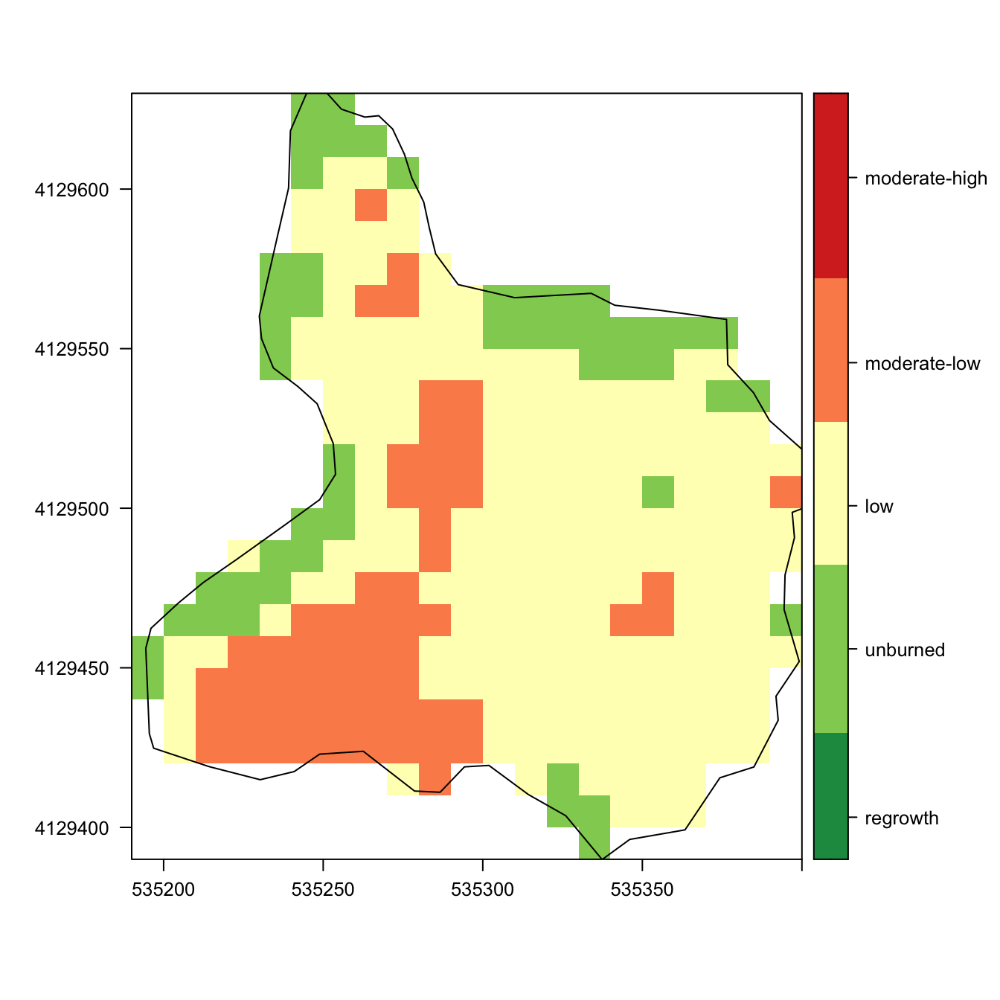
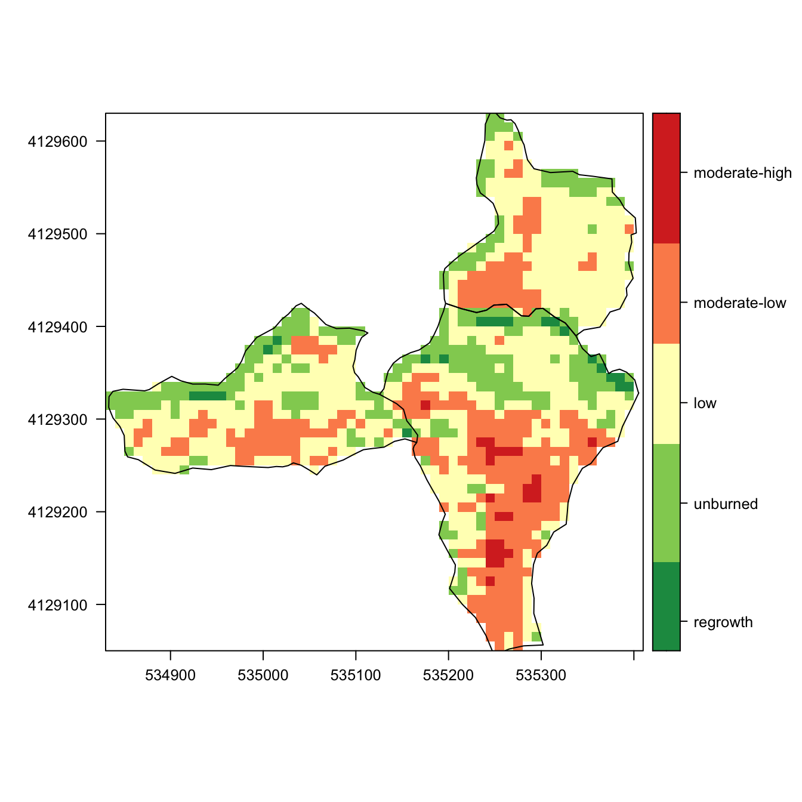
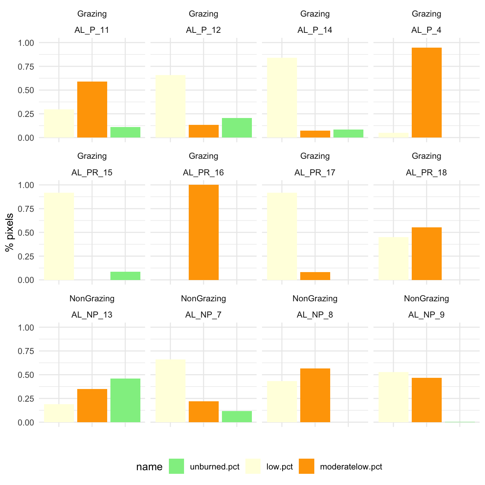

fire_severity_sentinel
Antonio J. Pérez-Luque (@ajpelu)
2021-09-20
Last updated: 2021-09-22
Checks: 7 0
Knit directory: fire_alcontar/
This reproducible R Markdown analysis was created with workflowr (version 1.6.2). The Checks tab describes the reproducibility checks that were applied when the results were created. The Past versions tab lists the development history.
Great! Since the R Markdown file has been committed to the Git repository, you know the exact version of the code that produced these results.
Great job! The global environment was empty. Objects defined in the global environment can affect the analysis in your R Markdown file in unknown ways. For reproduciblity it’s best to always run the code in an empty environment.
The command set.seed(20210630) was run prior to running the code in the R Markdown file. Setting a seed ensures that any results that rely on randomness, e.g. subsampling or permutations, are reproducible.
Great job! Recording the operating system, R version, and package versions is critical for reproducibility.
Nice! There were no cached chunks for this analysis, so you can be confident that you successfully produced the results during this run.
Great job! Using relative paths to the files within your workflowr project makes it easier to run your code on other machines.
Great! You are using Git for version control. Tracking code development and connecting the code version to the results is critical for reproducibility.
The results in this page were generated with repository version b725df5. See the Past versions tab to see a history of the changes made to the R Markdown and HTML files.
Note that you need to be careful to ensure that all relevant files for the analysis have been committed to Git prior to generating the results (you can use wflow_publish or wflow_git_commit). workflowr only checks the R Markdown file, but you know if there are other scripts or data files that it depends on. Below is the status of the Git repository when the results were generated:
Ignored files:
Ignored: .Rhistory
Ignored: .Rproj.user/
Untracked files:
Untracked: data/nbr_autumn.csv
Untracked: data/sentinel_nbr/
Untracked: data/spatial/EP_Andalucía.cpg
Untracked: data/spatial/EP_Andalucía.dbf
Untracked: data/spatial/EP_Andalucía.prj
Untracked: data/spatial/EP_Andalucía.shp
Untracked: data/spatial/EP_Andalucía.shx
Untracked: data/spatial/GEO_PARCELAS.cpg
Untracked: data/spatial/GEO_PARCELAS.dbf
Untracked: data/spatial/GEO_PARCELAS.prj
Untracked: data/spatial/GEO_PARCELAS.qpj
Untracked: data/spatial/GEO_PARCELAS.shp
Untracked: data/spatial/GEO_PARCELAS.shx
Untracked: data/spatial/computed_nbr.tif
Untracked: data/spatial/computed_nbr.tif.aux.xml
Untracked: data/spatial/computed_rbr.tif
Unstaged changes:
Modified: analysis/fire_severity_drone.Rmd
Note that any generated files, e.g. HTML, png, CSS, etc., are not included in this status report because it is ok for generated content to have uncommitted changes.
These are the previous versions of the repository in which changes were made to the R Markdown (analysis/fire_severity_sentinel.Rmd) and HTML (docs/fire_severity_sentinel.html) files. If you’ve configured a remote Git repository (see ?wflow_git_remote), click on the hyperlinks in the table below to view the files as they were in that past version.
| File | Version | Author | Date | Message |
|---|---|---|---|---|
| Rmd | b725df5 | ajpelu | 2021-09-22 | add sentinel analysis |
library(tidyverse)
library(sf)
library(raster)
library(here)
library(DiagrammeR)
library(exactextractr)
library(rasterVis)
library(ggpubr)
library(patchwork)
library(DT)Introduction
Our aim is to compute the Burn Severity for the two Fires (atumn and spring fires) in our study area.
There are several indexes to compute the burn severity, all of them derived from the Normalized Burn Ratio (NBR). The NBR is defined as: \[NBR = \frac{\rho NIR - \rho SWIR}{\rho NIR + \rho SWIR}\]
with \(\rho NIR\) as the reflectance in the near-infrared, and \(\rho SWIR\) as the reflectande in the shortwave infrared.This index is based on the observation that the healthy vegetation shows a very high reflectance in the NIR and a low reflectance in the SWIR portion of the spectrum. On the other hand, recently burnt areas show low reflectances in the NIR and high reflectances in the SWIR. Therefore, high values of NBR indicate healthy vegetation, and low values indicate bare ground and recently burnt areas.

The difference between pre-fire and post-fire NBR images is used to compute the \(\Delta NBR\) (or \(dNBR\)). Higher value of dNBR indicates more severe damage.
There are several formulas to compute \(dNBR\):
\(\Delta NBR = prefireNBR - postfireNBR\) o \(dNBR\)
\(Relative \Delta NBR = \frac{\Delta NBR}{prefireNBR}\) o \(RdNBR\)
\(Relativized BR = \frac{\Delta NBR}{(prefireNBR + 1.001)}\)
Methodology
Prepare and Download sentinel data from GEE.
We compute two pre-fire images and two post-fire images for each of the fires analyzed. The images’ date depend on the availability of Sentinel images. Specifically we processes the following dates:
- Autumn fire (2018-18-12): pre-fire: 20181212, 20181217; post-fire: 20181222, 20181227;
- Spring fire (2019-05-07): pre-fire: 20190426, 20190506; post-fire: 20190511, 20190514;
For each date we computed the NBR index as the above mentioned equation (see this GEE code)
# Ojo ver en este trabajo el codigo GEE https://www.mdpi.com/2072-4292/10/6/879 - Images were downloaded and processes in R.
Compute the dNBR and other indexes.
In R, we computed the dNBR and the RBR (see Parks et al. 2014). The RBR is a modification of the RdNBR, that is less correlated with the previous fire condition
We explored the correlation of both indexes with the prefire conditions (prefireNBR). See Parks et al. 2014.
Then we generated a raster with the nbr (dNBR) using only the previous and post fire images.
Workflow
l <- list.files(here::here("data/sentinel_nbr"),
pattern=".tif",
full.names = TRUE)
r <- raster::stack(l)
# Read spatial data
# Add fire treatment: if NP or P --> AutumnFire /else/ SpringFire
ep <- st_read(dsn = here::here("data/spatial/EP_Andalucía.shp"),
quiet = TRUE) %>%
mutate(fireEpoch = case_when(ABREVIA == "PR" ~ "Spring",
TRUE ~ "Autumn"))
ep_autumn <- subset(ep, fireEpoch == "Autumn")
ep_spring <- subset(ep, fireEpoch == "Spring")my.at <- c(-.25, -.1, .1, .27, .44, .66)
cols <- c("#1a9850", # Regrowth-High
"#91cf60", # Regrowth-Low
"#d9ef8b", # Unburned
"#ffffbf", # Low Severity
"#fee08b", # Moderate-Low Severity
"#fc8d59", # Moderate-High Severity
"#d73027") # High Severity
# cols <- colorRampPalette(c("lightgreen", "yellow","red" ))(length(my.at))Burn Severity
Burn severity (Autumn Fire)
nbr_autumn <- raster::overlay(
r[['s2nbr_2018.12.17']], r[['s2nbr_2018.12.22']],
fun = function(pre,post){return(pre-post)})
names(nbr_autumn) <- 'nbr'
rbr_autumn <- raster::overlay(
r[['s2nbr_2018.12.17']], r[['s2nbr_2018.12.22']],
fun = function(pre,post){return((pre-post)/(pre + 1.001))})
names(rbr_autumn) <- 'rbr'- Explore the correlation of both indices
rbr_autumn.df <- as.data.frame(rbr_autumn, xy=TRUE)
nbr_autumn.df <- as.data.frame(nbr_autumn, xy=TRUE)
prefire_autumn.df <- as.data.frame(r[['s2nbr_2018.12.17']], xy= TRUE)
y <- inner_join(rbr_autumn.df,
nbr_autumn.df) %>%
inner_join(prefire_autumn.df) %>%
mutate(severity =
cut(nbr, breaks = c(-Inf, -.251, -.101, .099,
.269, .439,.659, Inf),
labels = c(
"Regrowth High", "Regrowth Low", "Unburned",
"Low Severity", "Moderate Low Severity",
"Moderate High Severity", "High Severity")
))
## Correlation of NBR or RBR with previous prefire values.
## See Parks et al. 2014 doi:10.3390/rs6031827
p.nbr <- ggscatter(y,
x = "s2nbr_2018.12.17",
y = "nbr", alpha=.5,
color = "severity") +
stat_cor(p.accuracy = 0.001, r.accuracy = 0.01,
color = "red") +
ylab("NBR") +
xlab("Prefire-NBR")
p.rbr <- ggscatter(y,
x = "s2nbr_2018.12.17",
y = "rbr",
color = "severity",
alpha=.5) +
stat_cor(p.accuracy = 0.001, r.accuracy = 0.01,
color = "red") +
ylab("RBR") +
xlab("Prefire-NBR")
p.nbr + p.rbr
Mapping
nbr_autumn_crop <- crop(nbr_autumn, extent(ep_autumn))
nbr_autumn_mask <- mask(nbr_autumn_crop, ep_autumn)
levelplot(nbr_autumn_mask, margin = FALSE,
at=my.at,
col.regions = cols,
color=list(
labels = list(at=my.at -0.1,
labels =
c("regrowth",
"unburned",
"low",
"moderate-low",
"moderate-high",
"high")))) +
layer(sp::sp.polygons(as_Spatial(ep_autumn)))
Burn severity (Spring Fire)
nbr_spring <- raster::overlay(
r[['s2nbr_2019.05.06']], r[['s2nbr_2019.05.11']],
fun = function(pre,post){return(pre-post)})
names(nbr_spring) <- 'nbr'
rbr_spring <- raster::overlay(
r[['s2nbr_2019.05.06']], r[['s2nbr_2019.05.11']],
fun = function(pre,post){return((pre-post)/(pre + 1.001))})
names(rbr_spring) <- 'rbr'- Explore the correlation of both indices
rbr_spring.df <- as.data.frame(rbr_spring, xy=TRUE)
nbr_spring.df <- as.data.frame(nbr_spring, xy=TRUE)
prefire_spring.df <- as.data.frame(r[['s2nbr_2019.05.06']], xy= TRUE)
y <- inner_join(rbr_spring.df,
nbr_spring.df) %>%
inner_join(prefire_spring.df) %>%
mutate(severity =
cut(nbr, breaks = c(-Inf, -.251, -.101, .099,
.269, .439,.659, Inf),
labels = c(
"Regrowth High", "Regrowth Low", "Unburned",
"Low Severity", "Moderate Low Severity",
"Moderate High Severity", "High Severity")
))
## Correlation of NBR or RBR with previous prefire values.
## See Parks et al. 2014 doi:10.3390/rs6031827
p.nbr <- ggscatter(y,
x = "s2nbr_2019.05.06",
y = "nbr", alpha=.5,
color = "severity") +
stat_cor(p.accuracy = 0.001, r.accuracy = 0.01,
color = "red") +
ylab("NBR") +
xlab("Prefire-NBR")
p.rbr <- ggscatter(y,
x = "s2nbr_2019.05.06",
y = "rbr", alpha=.5,
color = "severity") +
stat_cor(p.accuracy = 0.001, r.accuracy = 0.01,
color = "red") +
ylab("RBR") +
xlab("Prefire-NBR")
p.nbr + p.rbr
Mapping
nbr_spring_crop <- crop(nbr_spring, extent(ep_spring))
nbr_spring_mask <- mask(nbr_spring_crop, ep_spring)
levelplot(nbr_spring_mask, margin = FALSE,
at=my.at,
col.regions = cols,
color=list(
labels = list(at=my.at -0.1,
labels =
c("regrowth",
"unburned",
"low",
"moderate-low",
"moderate-high",
"high")))) +
layer(sp::sp.polygons(as_Spatial(ep_spring)))
Burn Severity (all areas)
nbr_alcontar <- raster::merge(nbr_spring_mask, nbr_autumn_mask)
levelplot(nbr_alcontar, margin = FALSE,
at=my.at,
col.regions = cols,
color=list(
labels = list(at=my.at -0.1,
labels =
c("regrowth",
"unburned",
"low",
"moderate-low",
"moderate-high",
"high")))) +
layer(sp::sp.polygons(as_Spatial(ep_spring))) +
layer(sp::sp.polygons(as_Spatial(ep_autumn))) 
writeRaster(nbr_alcontar, here::here("data/spatial/computed_nbr.tiff"), overwrite=TRUE)rbr_spring_crop <- crop(rbr_spring, extent(ep_spring))
rbr_spring_mask <- mask(rbr_spring_crop, ep_spring)
rbr_autumn_crop <- crop(rbr_autumn, extent(ep_autumn))
rbr_autumn_mask <- mask(rbr_autumn_crop, ep_autumn)
rbr_alcontar <- raster::merge(rbr_spring_mask, rbr_autumn_mask)
writeRaster(rbr_alcontar, here::here("data/spatial/computed_rbr.tiff"), overwrite = TRUE)Burn Severity by PLOTS
- Now we explore the burn severity of each plot
parcelas <- st_read(dsn = here::here("data/spatial/GEO_PARCELAS.shp"),
quiet = TRUE)
p <- subset(parcelas, TIPO=="QUEMA")nbr_parcelas <- exact_extract(nbr_alcontar, p,
include_cols = "NOMBRE",
force_df = TRUE,
progress = FALSE) %>%
bind_rows() %>%
mutate(fract = round(coverage_fraction,2)) %>%
mutate(nbr_class =
cut(value,
breaks = c(-Inf, -.251, -.101, .099,
.269, .439,.659, Inf),
labels = c(
"Regrowth High", "Regrowth Low", "Unburned",
"Low Severity", "Moderate Low Severity",
"Moderate High Severity", "High Severity")
))
df <- nbr_parcelas %>%
group_by(NOMBRE, nbr_class) %>%
summarise(n = sum(fract)) %>% # ponderamos por frac
pivot_wider(names_from = nbr_class, values_from = n) %>%
rowwise() %>%
mutate(n = sum(Unburned,`Low Severity`,`Moderate Low Severity`, na.rm=TRUE)) %>%
mutate(unburned.pct = Unburned / n,
low.pct = `Low Severity` / n,
moderatelow.pct = `Moderate Low Severity` / n) %>%
mutate(treatment = case_when(
str_detect(NOMBRE, "AL_NP") ~ "NonGrazing",
TRUE ~ "Grazing"
))df %>% dplyr::select(NOMBRE,
unburned.pct,
low.pct,
moderatelow.pct) %>%
DT::datatable() %>%
formatRound(columns=c("unburned.pct", "low.pct", "moderatelow.pct"), digits=2)df %>% dplyr::select(NOMBRE, treatment,
unburned.pct,
low.pct,
moderatelow.pct) %>%
pivot_longer(cols=unburned.pct:moderatelow.pct) %>%
ggplot(aes(x=name, y=value, fill=name)) + geom_bar(stat="identity") +
facet_wrap(~treatment+NOMBRE, ncol=4) +
scale_fill_manual(breaks = c("unburned.pct",
"low.pct",
"moderatelow.pct"),
values = c("lightgreen",
"lightyellow",
"orange")) +
theme_minimal() +
ylab("% pixels") + xlab("") +
theme(axis.text.x = element_blank(),
legend.position = "bottom")
sessionInfo()R version 4.0.2 (2020-06-22)
Platform: x86_64-apple-darwin17.0 (64-bit)
Running under: macOS Catalina 10.15.3
Matrix products: default
BLAS: /Library/Frameworks/R.framework/Versions/4.0/Resources/lib/libRblas.dylib
LAPACK: /Library/Frameworks/R.framework/Versions/4.0/Resources/lib/libRlapack.dylib
locale:
[1] en_US.UTF-8/en_US.UTF-8/en_US.UTF-8/C/en_US.UTF-8/en_US.UTF-8
attached base packages:
[1] stats graphics grDevices utils datasets methods base
other attached packages:
[1] DT_0.17 patchwork_1.1.1 ggpubr_0.4.0
[4] rasterVis_0.49 latticeExtra_0.6-29 lattice_0.20-41
[7] exactextractr_0.5.1 DiagrammeR_1.0.6.1 here_1.0.1
[10] raster_3.4-5 sp_1.4-5 sf_1.0-2
[13] forcats_0.5.1 stringr_1.4.0 dplyr_1.0.6
[16] purrr_0.3.4 readr_1.4.0 tidyr_1.1.3
[19] tibble_3.1.2 ggplot2_3.3.5 tidyverse_1.3.1
[22] workflowr_1.6.2
loaded via a namespace (and not attached):
[1] colorspace_2.0-0 ggsignif_0.6.0 ellipsis_0.3.2 class_7.3-18
[5] rio_0.5.16 rgdal_1.5-23 rprojroot_2.0.2 fs_1.5.0
[9] rstudioapi_0.13 proxy_0.4-26 farver_2.0.3 hexbin_1.28.2
[13] fansi_0.4.2 lubridate_1.7.10 xml2_1.3.2 codetools_0.2-18
[17] knitr_1.31 jsonlite_1.7.2 broom_0.7.9 dbplyr_2.1.1
[21] png_0.1-7 compiler_4.0.2 httr_1.4.2 backports_1.2.1
[25] assertthat_0.2.1 fastmap_1.1.0 cli_2.5.0 later_1.1.0.1
[29] visNetwork_2.0.9 htmltools_0.5.2 tools_4.0.2 gtable_0.3.0
[33] glue_1.4.2 Rcpp_1.0.7 carData_3.0-4 cellranger_1.1.0
[37] jquerylib_0.1.3 vctrs_0.3.8 crosstalk_1.1.1 xfun_0.23
[41] openxlsx_4.2.3 rvest_1.0.0 lifecycle_1.0.0 rstatix_0.6.0
[45] zoo_1.8-8 scales_1.1.1 hms_1.0.0 promises_1.2.0.1
[49] parallel_4.0.2 RColorBrewer_1.1-2 yaml_2.2.1 curl_4.3
[53] sass_0.3.1 stringi_1.7.4 highr_0.8 e1071_1.7-8
[57] zip_2.1.1 rlang_0.4.10 pkgconfig_2.0.3 evaluate_0.14
[61] labeling_0.4.2 htmlwidgets_1.5.3 tidyselect_1.1.1 magrittr_2.0.1
[65] R6_2.5.0 generics_0.1.0 DBI_1.1.1 pillar_1.6.1
[69] haven_2.3.1 whisker_0.4 foreign_0.8-81 withr_2.4.1
[73] units_0.7-2 abind_1.4-5 modelr_0.1.8 crayon_1.4.1
[77] car_3.0-10 KernSmooth_2.23-18 utf8_1.1.4 rmarkdown_2.8
[81] jpeg_0.1-8.1 grid_4.0.2 readxl_1.3.1 data.table_1.14.0
[85] git2r_0.28.0 reprex_2.0.0 digest_0.6.27 classInt_0.4-3
[89] httpuv_1.5.5 munsell_0.5.0 viridisLite_0.3.0 bslib_0.2.4